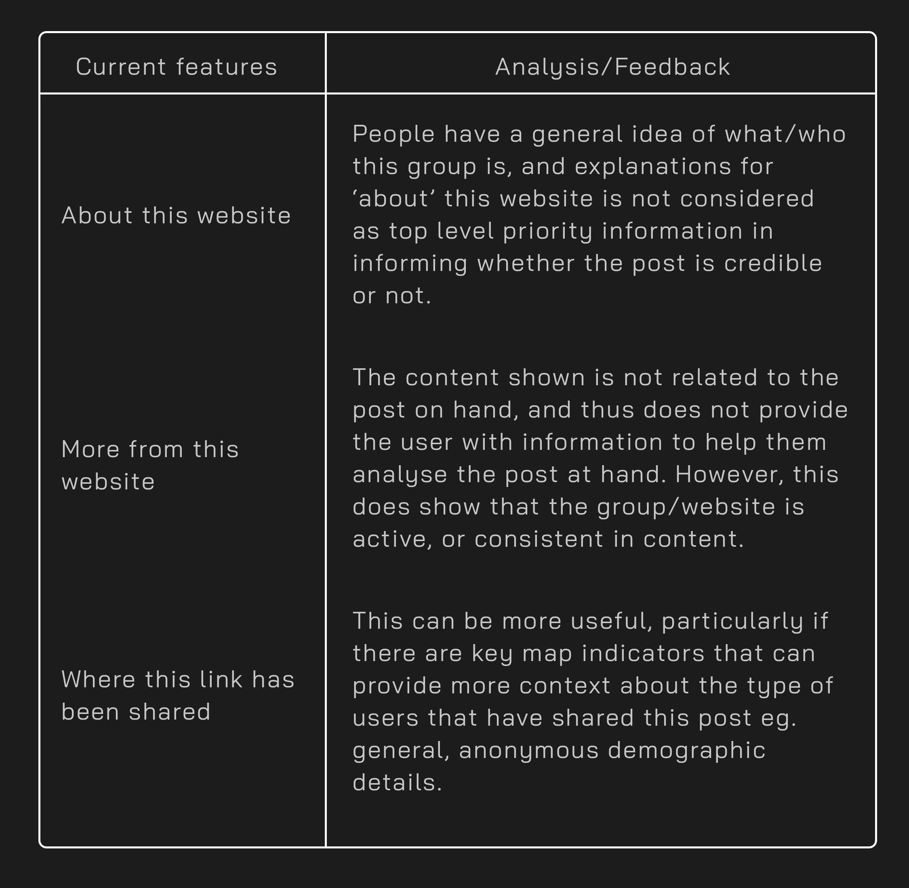
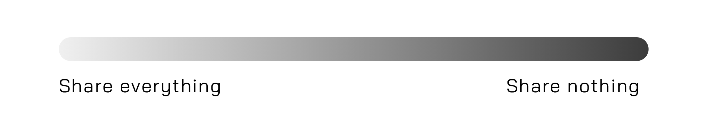
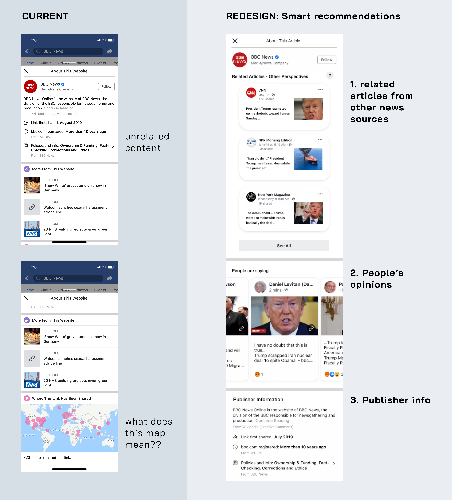
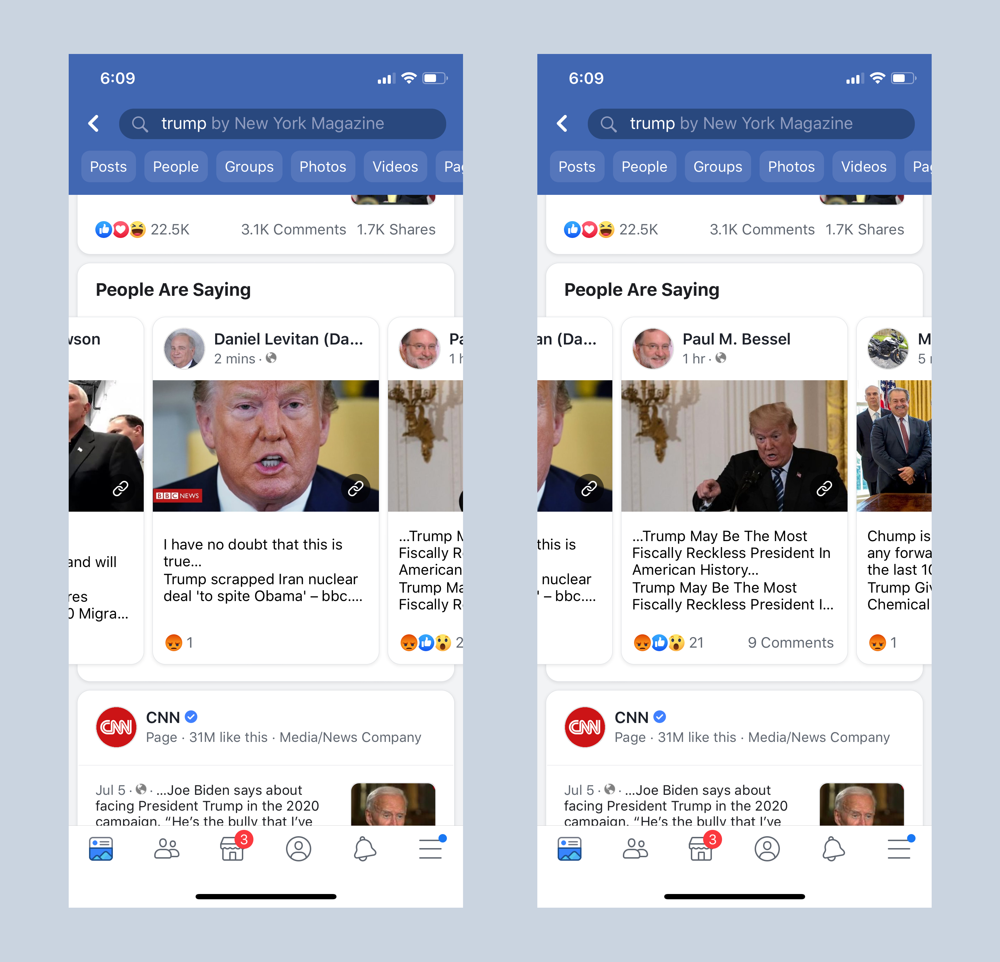
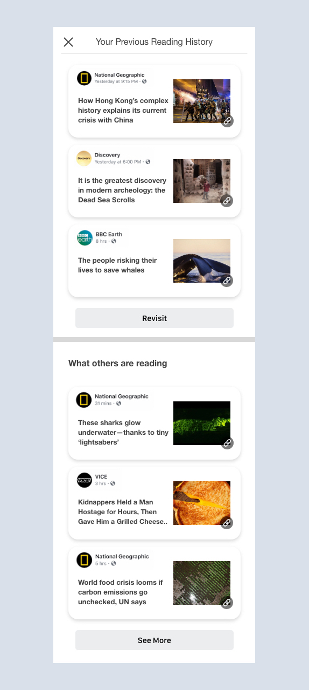

Fake News, Real Problems
UX Design, UX Strategy
By the way, I want to state that I am in no way criticizing Facebook or other parties mentioned in this case study. All the work done is an exploration into the problem space of fake news.
Earlier this year, after evaluating my old portfolio projects, I realized that I had veered somewhat off track from UX design. My projects were pretty bad, so I reached out to some old connections to gain inspiration and get back on track.
Moreover, I wanted to do something that was based on my interests of social sciences and humanitarianism movements, which I found to be indirectly addressed in current technology spaces.
That is, until talking to one particular interaction designer, he proposed:
“What about designing the issue of fake news for Facebook? That’s a real, current issue that needs to be addressed, so what if you come up with some ideas for that?”
Fake news is a real problem, and although Facebook has been taken active measures in combating and reducing fake news and content on their Newsfeed platform, with the upcoming 2020 U.S. Presidential elections, it might be time to revisit this problem again.
And don’t forget social media related events in other countries eg. Nigeria (2019) for example: here, here and here or India’s issue with fake news on WhatsApp (2018-19) read about it: here and here.

For me, this was an opportunity to get a dig at a complex, multifaceted real world problem that had the humanitarian edge that I was looking for, and to really try to practice UX research and design from start to finish.
Small deets.
Role
UX design, research + strategy.
Tools used:
Sketch, Adobe XD
Brief
The following is a personal case study that looks at some potential solutions and ideas for the issue of fake news eg. political discourse on Facebook’s Newsfeed platform.
Through this project, my process was guided by qualitative user research, and reading (not again…) academic papers, in conjunction to Facebook’s design guidelines, and many ‘haha let’s start over again!!’.
Year
This project was completed over a cumulative period of 5 weeks from spring to summer 2019.
Introduction.
Going into university, I knew I was really interested in social impact, human relationships, and how & why people did what they did. But I wanted solve problems creatively. Design allowed a way to combine both these fields together, and this problem was a perfect challenge.
As popularly defined by the internet, fake news can be thought of as misrepresented, false, inaccurate information that is then presented as genuine, verified information. Signature trademarks include being sensationalized, clickbait titles/images and often appeals to emotions.
Fake news is created with the intent to damage or influence some type of event, agency, or persons for personal, financial or political gains. Or for mischief, ‘trolling’, or attention-seeking. Often times, it’s spread because fake news is difficult to distinguish from factual news, and people genuinely mistaken fake news as something real.

Remember when the world was suppose to end in 2012... and global warming is real...
With that said, it’s difficult to even know where to begin for this intricate matter. The issue of fake news is complicated for a lot of reasons:

- The more extreme one’s perspective is, the more extreme content that aligns to that user’s views is shown to the user. This allows the grounds for unregulated radicalization between users of different perspectives.
- Another side effect of this personalization is that content that is not aligned or related to the user’s current state of perspective is UNLIKELY to be shown. Furthermore, most of the related content that is shown would mostly be around that user’s demographics, which doesn’t offer too much differentiation in perspective. All this adds to further political radicalization, which you can read more about here, here and here.


This infographic from First Draft News explains the different types of false news pretty well

- Who controls what information is shown, what are their intentions/history/perspectives
- User generated/expert-generated/hybrid responses
- Are they: Opinions, facts, experiences?
- Thinking styles, personal upbringing, political/cultural influences
- There are a lot of factors that make this complex!

- There’s a lot of information on the internet, and we are often influenced by those closest around us. Deciphering through all the information in a fair and unbiased manner while being aware of the dominant power structures, information sources and social constructs is not that easy.
- Prior exposure (to anything really) can also increase perceived accuracy or acceptance of fake news eg. illusory truth effect, where repeated statements or content is easier to process and thus, is perceived to be more truthful than new statements.
And there’s a lot of other reasons that can explain the causes, processes and perpetuation of fake news. However, I won’t focus on all the reasons due to sheer quantity and complexity but I will focus on what frustrates the users around me (namely, millennials).
The Exploration.
As a millenial, or Gen Z??, I’ve spent almost a decade of being on Facebook (that’s nearly half my life just saying). I personally don’t really use Facebook Newsfeed to check for real-world events, but rather as a source of keeping somewhat up to date with my social circle and as a source of internet meme culture (lol).
However, after the blow-up about Facebook in 2016, I have become more wary of information that originate from Facebook. I started by asking other Facebook users what they thought about the topic of fake news, and if they had any experiences with fake news on Facebook.

But the strongest lines that stood out to me were:
I only clicked on that information button (on the Facebook post) once. But it doesn’t really provide me with any relevant information haha, so I never used it again after.
Oh, I didn’t even notice the information button, I thought it was for an ad or something!
Although Facebook is a private corporation with its own business models (aka ads), Mark has updated Facebook's mission statement to reflect the current problems and goals for Facebook to move towards.
"Our full mission statement is: give people the power to build community and bring the world closer together. That reflects that we can't do this ourselves, but only by empowering people to build communities and bring people together." - Mark Zuckerberg
Facebook has been active in taking action for where it is involved. As recent as April 2019, Facebook has been getting enlisting the help of outside experts, human intervention and technology to quickly and accurate target fake news at its source and removal/reduction.
Let’s take a look at Facebook’s current designs in combating fake news.

Presenting the information button and the more info slide up tab
The biggest change that Facebook made to combat fake news was the information button that allows users to gain more information about the source of the post and the group posting it.

I asked some Facebook users what they thought about this, and these are some of their comments:
Again, the most common comment from all the people I've interviewed was:
“What does this information mean? It doesn’t really help me to understand the post in relations to other context or perspectives… nor does it provide relevant, related information.”
Reframing the Problem.
With this in mind, I approached my redesign in 3 main steps:
Goal: A practical and cohesive 'get more info' experience
a. Forced friction
b. Smart recommendations
c. Comparison analysis
The Redesigns.
1. Stay informed: A practical and cohesive 'get more info' experience
One of the first things I did was do some research on Facebook users, which ranges from a spectrum of people who use Facebook for personal, private connections to being a platform to publicly share opinions.
The people that I knew, or their parents, do not really share news articles online (but some of them did share health-related articles, which may or may not be false!). But according to research conducted, people who are aged 65+ are more likely to share fake news articles than those of other demographic details, such as education, sex, race, income, etc.
In opposition, some sources state that millennials are just as likely to be duped by fake news, just that they don’t share it (as much).
Regardless, it’s clear that not one user is resistant to fake news. However, it’s not Facebook’s place to determine what is considered fake news or not, which leaves a lot of ambiguity and work to the viewer of the article.
Using Facebook’s information tab with its current set of information doesn’t really help the users become more informed about the topic/post on hand. I get that this additional is meant to be neutral and provide general context, but is it providing real value and relevant information to the users?
If Facebook intends to take a more functional approach to combating fake news by providing contextual information, they should be able to provide relevant, related content that is based around that specific post or event instead of the source of the post (although that is important as well). Essentially, Facebook might benefit from forced friction in its user experience for media posts and shared articles.
FORCED FRICTION:
Forced friction in UX design can be considered as anything that prevents, or slows down the process of the user from completing the task on hand.
In this case, I propose that forced friction can be a solution to induce more critical analysis in users.
Aside from having the information button as an option for more information, relevant information related contentto the post should be shown to the user, with a ‘stronger’ presentation.
Upon viewing or hovering over a specific post, a brief slideshow detailing several critical details is shown almost instantly. 1. Beginning with the critical sentence or headline of the article, 2. it is then followed by when the link was first published and by whom, and 3. ending with when the article was last updated and if there were any revisions left.
“It takes more information to make you believe something you don’t want to believe than something you do” (quote from here)

I choose a moving slideshow so that users are aware of the changing information on their screens, even if they were not initially paying attention to it. They can choose to manually flip to the page of the slideshow they want, or click onto the post to read more about it.
Again, the purpose of this forced friction experience is to strongly suggest users to pay more attention to critical, useful elements of the post for the purpose of combating fake news.
It’s probably not possible to make everyone critical thinkers, but we can make the process of analysing easier. And in a neutral of a manner as possible.
I’ve come to reflect that although the purpose of UX design is to make the experience as seamless as possible, sometimes it might be necessary to induce a little friction for conscious thought and action. In addition, this might address the issue that I’ve found in Facebook users, which is that they don’t generally click on the ‘ information’ button and that users generally want information that is readily available to them.
SMART RECOMMENDATIONS:
Now, I think that Facebook’s ‘information button’ is a pretty powerful tool for providing users with more contextual information. I just think that it’s not being optimized to its best potential, namely - the type of content that is displayed in the tab.
This is an opportunity to provide information and articles from alternative perspectives and sources that is related to article on hand. While we ultimately cannot force users to think or act in a certain way, providing relevant context is important for a less biased analysis.
I decided to keep with the bubble-esque effect that is currently in use for some of Facebook’s content after exploring Newsfeed. I chose to display 3 related articles, all from different news sources, but the user has the option to view more. In terms of content for each bubble, I wanted to keep it straightforward so that it does not overwhelm the user.
The content includes: the group that posted the article, the date it was posted, the current number of shares and the title of the article. The article image is also displayed. There is an option for functions regarding the post eg. reporting it.
When I asked users what would be helpful in helping them analyze whether an article was credible or not, many of them mentioned that they wanted to other sources report on the same topic. This is so that:
1. The topic is real and is confirmed through multiple sources
2. There are varied reports on the same topic, which can provide a more neutral analysis
3. Users are (suggested to be) open to other sources
* Popular opinions:
When I was exploring Facebook Newsfeed and Pages + Groups, I noticed that there was an ‘opinions’ section when you search for certain key terms eg. Trump. It appears that this section is what other Facebook users are talking about connected to that specific key term or topic.
I've never seen this before until now
I think is a pretty useful tool that should be integrated into the information tab, as it allows other users to see what people outside of their circles are saying.
However, one critique of this is that it actually is not helpful because some users may post offensive or biased opinions. Furthermore, it might just show the perspectives of users that just actually post things on their walls, which is not reflective of all opinions about a topic.
One solution to that could be to have an ‘in-house twitter’ from verified pages. Or actually integrate twitter from verified/popular news pages but I’m not sure how feasible that is. Facebook posts made by politicians, influencers or other types of agencies can also be shared in this space, creating a live, updated public discourse space. Currently, Facebook Watch (videos) has a similar function where you can see all of the videos you have previously viewed.
Let's see what the big people are saying
COMPARISON ANALYSIS:
One other idea was to show a comparison analysis, which I mean by that Facebook automatically compiles articles that you’ve been reading (or even been exposed to) in Facebook, and sets a space where you can see (compare) what articles other people are reading. The purpose of this space to provide insights and opinions from different demographics (outside of your echo chamber).
For current users, in order to see the feed of different pages and people means you have to follow them all. People often don’t want to do that because they do not want to clutter their feeds or reveal personal influences.
I forget what I read all the time...
Depending on how effective this solution may be, simple filters such as categories can be applied to the articles so that users can quickly look for information. Doing this may help reduce the illusory effect (increased exposure to content = increased chance of accepting it as the truth).
This concept was inspired by The Wall Street Journal's Red Feed, Blue Feed. Although their project presents a very striking comparison of Facebook posts between liberals and conservatives, one constraint this is presentation is: who determines the range of political standing?
Instead, I believe a better focus is to gently encourage users to critically analyze by easing the way information is presented on Facebook Newsfeed.
Not only does this encourage better critical thinking for combatting fake news, these potential solutions will make it harder for fake content to pass as real news.
Going Forward.
TL;DR (thanks for reading this far, it's pretty long), fake news is a big problem that won't be stopping any time soon. And this problem doesn't just exist on Facebook, but any social media platform.
The purpose of this exploration has taught me to be careful of the subtle nuances in UX design, for example, how do you present information to users without being pushy? (So that they don't leave one platform for another)
There's still a whole load of work that can go into this case study, but looking back over the span of time that I spent on this, my initials ideas were confusing even to me. And I had a pretty poor grasp of Sketch and basically NO skills in Adobe XD.
I still have a long way to go in terms of design, but I'm pretty proud of myself for the work into this personal project (unrelated major + no school deadlines = big big procrastination). And as tiring as self-discipline is, I'm even more motivated now to do more design work!
As a result of this project, I've come to appreciate the research skills I've gained so far in uni, but more importantly, many problems are universal and affect people everywhere - and anyone with a desire to understand and use human empathy to solve these problems can help solve them.
Thanks for sticking it out to the end, I'll be updating this portfolio as fast as I can. Check back soon!